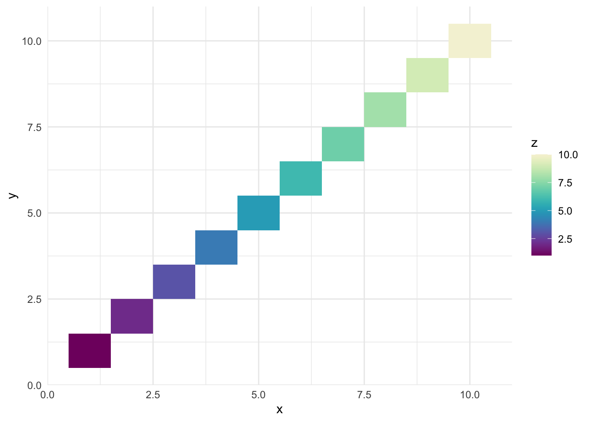

Quick start
The paletteer package in R brings together all the
color palettes from a large number of R packages
dedicated to colours. It provides a simple and
consistent interface to access these palettes, making
it easy to work with any color palette in R.
It offers more than 2000 color palettes from
various R packages, making it easy to create beautiful and
informative visualizations.
✍️ author → Emil Hvitfeldt
üìò documentation →
github
⭐️ more than 800 stars on github
Installation
To get started with paletteer, you can install it
directly from CRAN using the install.packages function:
install.packages("paletteer")
Basic usage
If you want to easily get started with
paletteer, you can use the
paletteer_d() function to access the palettes.
paletteer has a straightforward syntax for accessing
palettes: package_name::palette_name.
Here’s a basic example with the FridaKahlo palette from
the lisa package:
# load the library
library(paletteer)
# get the palette
my_colors <- paletteer::paletteer_d("lisa::FridaKahlo")
# use colors in a plot
barplot(1:length(my_colors), col = my_colors)
Key features
Palettes have different types, and paletteer demands a
specific function to access each type.
For example, if you want to build a
choropleth map, you need a
continuous palette. In this case, you can use the
paletteer_s and
scale_fill_paletteer_c functions.
For a bar plot, you need a
discrete palette. In this case, you can use the
paletteer_d and
scale_fill_paletteer_d functions.
→ Diverging continuous palettes
A diverging continuous palette is a palette that has a
center and two extremes. It is
useful for visualizing data with a center value.
For example, a palette that goes from
blue to
white
to red is a
diverging continuous palette.
Example with the pals::coolwarm palette:
# load required libraries
library(ggplot2)
library(paletteer)
library(reshape2)
# create a sample matrix to simulate data
set.seed(123)
data_matrix <- matrix(runif(625, min = 0, max = 1), nrow = 25, ncol = 25)
rownames(data_matrix) <- rev(LETTERS[1:25])
colnames(data_matrix) <- LETTERS[1:25]
data <- melt(data_matrix)
# create the heatmap
ggplot(data, aes(x = Var2, y = Var1, fill = value)) +
geom_tile() +
scale_fill_paletteer_c("pals::coolwarm") +
labs(x = NULL, y = NULL) +
theme_minimal()
→ Sequential continuous palettes
A sequential continuous palette is a palette that goes from one
extreme to another. It is useful for visualizing
data that goes from low to high.
For example, a palette that goes from
purple to
light yellow
is a sequential continuous palette.
Example with grDevices::Purple-Yellow palette:
# load the library
library(paletteer)
library(ggplot2)
# create some data
data <- data.frame(x = 1:10, y = 1:10, z = 1:10)
# create a plot
ggplot(data, aes(x, y, fill = z)) +
geom_tile() +
scale_fill_paletteer_c("grDevices::Purple-Yellow") +
theme_minimal()

→ Qualitative discrete palettes
Discrete palettes are palettes that have a
fixed number of colors. They are useful for
visualizing data that is categorical.
For example, a palette that goes from
red to
orange
to green to
black is a
discrete palette.
Example with the
nbapalettes::supersonics_holiday palette:
# load the library
library(paletteer)
library(ggplot2)
# create some data
data <- data.frame(
x = rnorm(20),
y = rnorm(20),
z = rep(LETTERS[1:4], 5)
)
# create a plot
ggplot(data, aes(x, y, fill = z)) +
geom_point(size = 10, shape = 21) +
scale_fill_paletteer_d("nbapalettes::supersonics_holiday") +
theme_minimal()
→ Get colors from a palette
Since discrete palettes contains a fixed number of colors, you can
also use paletteer to retrieve a list of colors and not
just using them in a plot.
Example:
# load the library
library(paletteer)
# get the palette
my_colors <- paletteer::paletteer_d("lisa::FridaKahlo")
print(my_colors)
## <colors>
## #121510FF #6D8325FF #D6CFB7FF #E5AD4FFF #BD5630FF